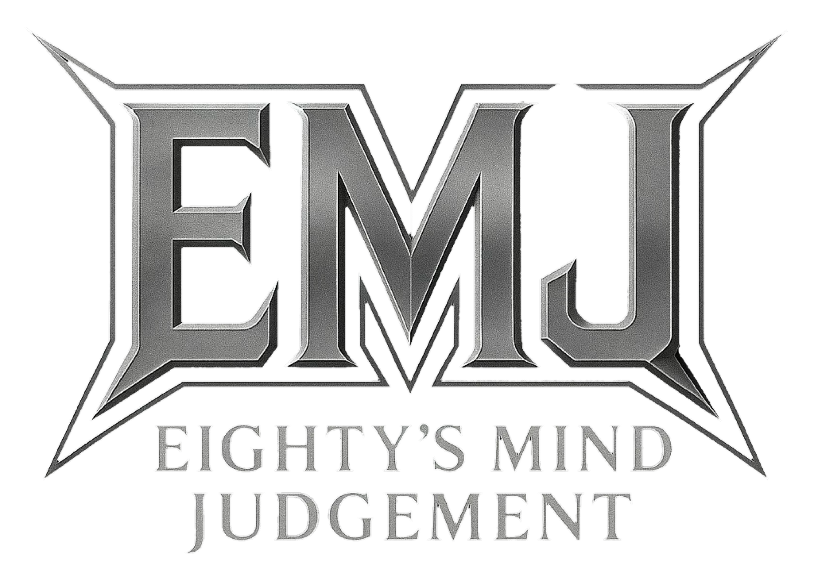

NEWS

FULL VOLTAGE WILL — The Essential Eighty's Mind Judgement
Released November 30, 2026
A formidable special best-of album celebrating Eighty's Mind Judgement's milestone of releasing ten albums.
Fourteen essential tracks drawn from that journey, forged with an unbreakable will, a steel soul, and an unwavering spirit that has endured every step of the way.
BIOGRAPHY

Eighty's Mind Judgement is a solo heavy metal project created in Japan.
Heavy Metal for Working People.
DISCOGRAPHY
Explore the music of Eighty's Mind Judgement.


MARKET
Market information for working people.